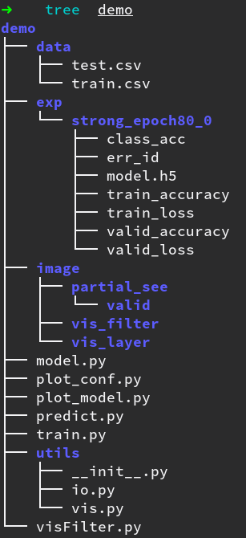

# Problem 1: Build Convolution Neural Network
Problem Description:
* tune performance
* record model structure
* record training procedure
## 範例
**[Note] 請不要直接使用助教的圖來當成作業交上來**
#### Model Structure
<center>Keras vis_utils</center>| <center> Tensorboard Graph</center>
:-------------------------:|:-------------------------:
<img src="http://i.imgur.com/XYkDQvY.png" alt="Drawing" style="width: 350px;"/> | <img src="http://i.imgur.com/Ucdf0ys.png" alt="Drawing" style="width: 1400px;"/>
#### Training Procedure
<img src="http://i.imgur.com/7w3WnTV.png" alt="Drawing" style="width: 700px;"/>
## TA hour
以下會以 **Keras** 為使用的套件來做介紹
<i class="fa fa-diamond"></i> Keywords: `keras.models`, `keras.layers`, `keras.callbacks`, `keras.utils.visualize_util.plot`, `Tensorboard`

#### I/O (io.py)
<div class="highlight"><pre><span></span><span class="ch">#!/usr/bin/env python</span>
<span class="c1"># -*- coding: utf-8 -*-</span>
<span class="kn">import</span> <span class="nn">os</span>
<span class="kn">import</span> <span class="nn">numpy</span> <span class="kn">as</span> <span class="nn">np</span>
<span class="kn">import</span> <span class="nn">random</span>
<span class="kn">from</span> <span class="nn">keras.utils.np\_utils</span> <span class="kn">import</span> <span class="n">to\_categorical</span>
<span class="n">base\_dir</span> <span class="o">=</span> <span class="n">os</span><span class="o">.</span><span class="n">path</span><span class="o">.</span><span class="n">dirname</span><span class="p">(</span><span class="n">os</span><span class="o">.</span><span class="n">path</span><span class="o">.</span><span class="n">dirname</span><span class="p">(</span><span class="n">os</span><span class="o">.</span><span class="n">path</span><span class="o">.</span><span class="n">dirname</span><span class="p">(</span><span class="n">os</span><span class="o">.</span><span class="n">path</span><span class="o">.</span><span class="n">realpath</span><span class="p">(</span><span class="vm">\_\_file\_\_</span><span class="p">))))</span>
<span class="n">data\_dir</span> <span class="o">=</span> <span class="n">os</span><span class="o">.</span><span class="n">path</span><span class="o">.</span><span class="n">join</span><span class="p">(</span><span class="n">base\_dir</span><span class="p">,</span><span class="s1">&#39;data&#39;</span><span class="p">)</span>
<span class="k">def</span> <span class="nf">read\_dataset</span><span class="p">(</span><span class="n">mode</span><span class="o">=</span><span class="s1">&#39;train&#39;</span><span class="p">,</span><span class="n">isFeat</span><span class="o">=</span><span class="bp">True</span><span class="p">):</span>
<span class="sd">&quot;&quot;&quot;</span>
<span class="sd"> Return:</span>
<span class="sd"> # features: (int. list) list</span>
<span class="sd"> # labels: int32 2D array</span>
<span class="sd"> data\_ids: int. list</span>
<span class="sd"> &quot;&quot;&quot;</span>
<span class="c1"># num\_data = 0</span>
<span class="n">datas</span> <span class="o">=</span> <span class="p">[]</span>
<span class="k">with</span> <span class="nb">open</span><span class="p">(</span><span class="n">os</span><span class="o">.</span><span class="n">path</span><span class="o">.</span><span class="n">join</span><span class="p">(</span><span class="n">data\_dir</span><span class="p">,</span><span class="s1">&#39;{}.csv&#39;</span><span class="o">.</span><span class="n">format</span><span class="p">(</span><span class="n">mode</span><span class="p">)))</span> <span class="k">as</span> <span class="nb">file</span><span class="p">:</span>
<span class="k">for</span> <span class="n">line\_id</span><span class="p">,</span><span class="n">line</span> <span class="ow">in</span> <span class="nb">enumerate</span><span class="p">(</span><span class="nb">file</span><span class="p">):</span>
<span class="k">if</span> <span class="n">isFeat</span><span class="p">:</span>
<span class="n">label</span><span class="p">,</span> <span class="n">feat</span><span class="o">=</span><span class="n">line</span><span class="o">.</span><span class="n">split</span><span class="p">(</span><span class="s1">&#39;,&#39;</span><span class="p">)</span>
<span class="k">else</span><span class="p">:</span>
<span class="n">\_</span><span class="p">,</span><span class="n">feat</span> <span class="o">=</span> <span class="n">line</span><span class="o">.</span><span class="n">split</span><span class="p">(</span><span class="s1">&#39;,&#39;</span><span class="p">)</span>
<span class="n">feat</span> <span class="o">=</span> <span class="n">np</span><span class="o">.</span><span class="n">fromstring</span><span class="p">(</span><span class="n">feat</span><span class="p">,</span><span class="n">dtype</span><span class="o">=</span><span class="nb">int</span><span class="p">,</span><span class="n">sep</span><span class="o">=</span><span class="s1">&#39; &#39;</span><span class="p">)</span>
<span class="c1"># print(feat)</span>
<span class="n">feat</span> <span class="o">=</span> <span class="n">np</span><span class="o">.</span><span class="n">reshape</span><span class="p">(</span><span class="n">feat</span><span class="p">,(</span><span class="mi">48</span><span class="p">,</span><span class="mi">48</span><span class="p">,</span><span class="mi">1</span><span class="p">))</span>
<span class="k">if</span> <span class="n">isFeat</span><span class="p">:</span>
<span class="n">datas</span><span class="o">.</span><span class="n">append</span><span class="p">((</span><span class="n">feat</span><span class="p">,</span><span class="nb">int</span><span class="p">(</span><span class="n">label</span><span class="p">),</span><span class="n">line\_id</span><span class="p">))</span>
<span class="k">else</span><span class="p">:</span>
<span class="n">datas</span><span class="o">.</span><span class="n">append</span><span class="p">(</span><span class="n">feat</span><span class="p">)</span>
<span class="c1"># random.shuffle(datas) # shuffle outside</span>
<span class="k">if</span> <span class="n">isFeat</span><span class="p">:</span>
<span class="n">feats</span><span class="p">,</span><span class="n">labels</span><span class="p">,</span><span class="n">line\_ids</span> <span class="o">=</span> <span class="nb">zip</span><span class="p">(</span><span class="o">*</span><span class="n">datas</span><span class="p">)</span>
<span class="k">else</span><span class="p">:</span>
<span class="n">feats</span> <span class="o">=</span> <span class="n">datas</span>
<span class="n">feats</span> <span class="o">=</span> <span class="n">np</span><span class="o">.</span><span class="n">asarray</span><span class="p">(</span><span class="n">feats</span><span class="p">)</span>
<span class="k">if</span> <span class="n">isFeat</span><span class="p">:</span>
<span class="n">labels</span> <span class="o">=</span> <span class="n">to\_categorical</span><span class="p">(</span><span class="n">np</span><span class="o">.</span><span class="n">asarray</span><span class="p">(</span><span class="n">labels</span><span class="p">,</span><span class="n">dtype</span><span class="o">=</span><span class="n">np</span><span class="o">.</span><span class="n">int32</span><span class="p">))</span>
<span class="k">return</span> <span class="n">feats</span><span class="p">,</span><span class="n">labels</span><span class="p">,</span><span class="n">line\_ids</span>
<span class="k">else</span><span class="p">:</span>
<span class="k">return</span> <span class="n">feats</span>
<span class="k">def</span> <span class="nf">dump\_history</span><span class="p">(</span><span class="n">store\_path</span><span class="p">,</span><span class="n">logs</span><span class="p">):</span>
<span class="k">with</span> <span class="nb">open</span><span class="p">(</span><span class="n">os</span><span class="o">.</span><span class="n">path</span><span class="o">.</span><span class="n">join</span><span class="p">(</span><span class="n">store\_path</span><span class="p">,</span><span class="s1">&#39;train\_loss&#39;</span><span class="p">),</span><span class="s1">&#39;a&#39;</span><span class="p">)</span> <span class="k">as</span> <span class="n">f</span><span class="p">:</span>
<span class="k">for</span> <span class="n">loss</span> <span class="ow">in</span> <span class="n">logs</span><span class="o">.</span><span class="n">tr\_losses</span><span class="p">:</span>
<span class="n">f</span><span class="o">.</span><span class="n">write</span><span class="p">(</span><span class="s1">&#39;{}</span><span class="se">\n</span><span class="s1">&#39;</span><span class="o">.</span><span class="n">format</span><span class="p">(</span><span class="n">loss</span><span class="p">))</span>
<span class="k">with</span> <span class="nb">open</span><span class="p">(</span><span class="n">os</span><span class="o">.</span><span class="n">path</span><span class="o">.</span><span class="n">join</span><span class="p">(</span><span class="n">store\_path</span><span class="p">,</span><span class="s1">&#39;train\_accuracy&#39;</span><span class="p">),</span><span class="s1">&#39;a&#39;</span><span class="p">)</span> <span class="k">as</span> <span class="n">f</span><span class="p">:</span>
<span class="k">for</span> <span class="n">acc</span> <span class="ow">in</span> <span class="n">logs</span><span class="o">.</span><span class="n">tr\_accs</span><span class="p">:</span>
<span class="n">f</span><span class="o">.</span><span class="n">write</span><span class="p">(</span><span class="s1">&#39;{}</span><span class="se">\n</span><span class="s1">&#39;</span><span class="o">.</span><span class="n">format</span><span class="p">(</span><span class="n">acc</span><span class="p">))</span>
<span class="k">with</span> <span class="nb">open</span><span class="p">(</span><span class="n">os</span><span class="o">.</span><span class="n">path</span><span class="o">.</span><span class="n">join</span><span class="p">(</span><span class="n">store\_path</span><span class="p">,</span><span class="s1">&#39;valid\_loss&#39;</span><span class="p">),</span><span class="s1">&#39;a&#39;</span><span class="p">)</span> <span class="k">as</span> <span class="n">f</span><span class="p">:</span>
<span class="k">for</span> <span class="n">loss</span> <span class="ow">in</span> <span class="n">logs</span><span class="o">.</span><span class="n">val\_losses</span><span class="p">:</span>
<span class="n">f</span><span class="o">.</span><span class="n">write</span><span class="p">(</span><span class="s1">&#39;{}</span><span class="se">\n</span><span class="s1">&#39;</span><span class="o">.</span><span class="n">format</span><span class="p">(</span><span class="n">loss</span><span class="p">))</span>
<span class="k">with</span> <span class="nb">open</span><span class="p">(</span><span class="n">os</span><span class="o">.</span><span class="n">path</span><span class="o">.</span><span class="n">join</span><span class="p">(</span><span class="n">store\_path</span><span class="p">,</span><span class="s1">&#39;valid\_accuracy&#39;</span><span class="p">),</span><span class="s1">&#39;a&#39;</span><span class="p">)</span> <span class="k">as</span> <span class="n">f</span><span class="p">:</span>
<span class="k">for</span> <span class="n">acc</span> <span class="ow">in</span> <span class="n">logs</span><span class="o">.</span><span class="n">val\_accs</span><span class="p">:</span>
<span class="n">f</span><span class="o">.</span><span class="n">write</span><span class="p">(</span><span class="s1">&#39;{}</span><span class="se">\n</span><span class="s1">&#39;</span><span class="o">.</span><span class="n">format</span><span class="p">(</span><span class="n">acc</span><span class="p">))</span>
</pre></div>
#### 定義模型
<div class="highlight"><pre><span></span><span class="kn">import</span> <span class="nn">os</span>
<span class="n">os</span><span class="o">.</span><span class="n">environ</span><span class="p">[</span><span class="s1">&#39;TF_CPP_MIN_LOG_LEVEL&#39;</span><span class="p">]</span> <span class="o">=</span> <span class="s1">&#39;2&#39;</span>
<span class="kn">from</span> <span class="nn">keras.models</span> <span class="kn">import</span> <span class="n">Sequential</span>
<span class="kn">from</span> <span class="nn">keras.layers</span> <span class="kn">import</span> <span class="n">Input</span><span class="p">,</span><span class="n">Dense</span><span class="p">,</span><span class="n">Dropout</span><span class="p">,</span><span class="n">Flatten</span><span class="p">,</span><span class="n">Activation</span>
<span class="kn">from</span> <span class="nn">keras.layers</span> <span class="kn">import</span> <span class="n">Convolution2D</span><span class="p">,</span><span class="n">MaxPooling2D</span>
<span class="kn">from</span> <span class="nn">keras.optimizers</span> <span class="kn">import</span> <span class="n">SGD</span>
<span class="n">nb_class</span> <span class="o">=</span> <span class="mi">7</span>
<span class="k">def</span> <span class="nf">build_model</span><span class="p">(</span><span class="n">mode</span><span class="p">):</span>
<span class="sd">&quot;&quot;&quot;Return the Keras model for training</span>
<span class="sd"> Keyword arguments:</span>
<span class="sd"> mode: model name specified in training and predicting script</span>
<span class="sd"> &quot;&quot;&quot;</span>
<span class="n">model</span> <span class="o">=</span> <span class="n">Sequential</span><span class="p">()</span>
<span class="k">if</span> <span class="n">mode</span> <span class="o">==</span> <span class="s1">&#39;easy&#39;</span><span class="p">:</span>
<span class="c1"># CNN part (you can repeat this part several times)</span>
<span class="n">model</span><span class="o">.</span><span class="n">add</span><span class="p">(</span><span class="n">Convolution2D</span><span class="p">(</span><span class="mi">8</span><span class="p">,</span><span class="mi">1</span><span class="p">,</span><span class="mi">1</span><span class="p">,</span><span class="n">border_mode</span><span class="o">=</span><span class="s1">&#39;valid&#39;</span><span class="p">,</span><span class="n">input_shape</span><span class="o">=</span><span class="p">(</span><span class="mi">48</span><span class="p">,</span><span class="mi">48</span><span class="p">,</span><span class="mi">1</span><span class="p">)))</span>
<span class="n">model</span><span class="o">.</span><span class="n">add</span><span class="p">(</span><span class="n">Activation</span><span class="p">(</span><span class="s1">&#39;relu&#39;</span><span class="p">))</span>
<span class="n">model</span><span class="o">.</span><span class="n">add</span><span class="p">(</span><span class="n">MaxPooling2D</span><span class="p">(</span><span class="n">pool_size</span><span class="o">=</span><span class="p">(</span><span class="mi">2</span><span class="p">,</span> <span class="mi">2</span><span class="p">)))</span>
<span class="n">model</span><span class="o">.</span><span class="n">add</span><span class="p">(</span><span class="n">Dropout</span><span class="p">(</span><span class="mf">0.8</span><span class="p">))</span>
<span class="c1"># Fully connected part</span>
<span class="n">model</span><span class="o">.</span><span class="n">add</span><span class="p">(</span><span class="n">Flatten</span><span class="p">())</span>
<span class="n">model</span><span class="o">.</span><span class="n">add</span><span class="p">(</span><span class="n">Dense</span><span class="p">(</span><span class="mi">16</span><span class="p">))</span>
<span class="n">model</span><span class="o">.</span><span class="n">add</span><span class="p">(</span><span class="n">Activation</span><span class="p">(</span><span class="s1">&#39;relu&#39;</span><span class="p">))</span>
<span class="n">model</span><span class="o">.</span><span class="n">add</span><span class="p">(</span><span class="n">Dense</span><span class="p">(</span><span class="n">nb_class</span><span class="p">))</span>
<span class="n">model</span><span class="o">.</span><span class="n">add</span><span class="p">(</span><span class="n">Activation</span><span class="p">(</span><span class="s1">&#39;softmax&#39;</span><span class="p">))</span>
<span class="n">opt</span> <span class="o">=</span> <span class="n">SGD</span><span class="p">(</span><span class="n">lr</span><span class="o">=</span><span class="mf">0.01</span><span class="p">,</span><span class="n">decay</span><span class="o">=</span><span class="mf">0.0</span><span class="p">)</span>
<span class="n">model</span><span class="o">.</span><span class="n">compile</span><span class="p">(</span><span class="n">loss</span><span class="o">=</span><span class="s1">&#39;categorical_crossentropy&#39;</span><span class="p">,</span>
<span class="n">optimizer</span><span class="o">=</span><span class="n">opt</span><span class="p">,</span>
<span class="n">metrics</span><span class="o">=</span><span class="p">[</span><span class="s1">&#39;accuracy&#39;</span><span class="p">])</span>
<span class="n">model</span><span class="o">.</span><span class="n">summary</span><span class="p">()</span> <span class="c1"># show the whole model in terminal</span>
<span class="k">return</span> <span class="n">model</span>
</pre></div>
#### 紀錄訓練過程
<div class="highlight"><pre><span></span><span class="kn">from</span> <span class="nn">keras.callbacks</span> <span class="kn">import</span> <span class="n">Callback</span>
<span class="k">class</span> <span class="nc">History</span><span class="p">(</span><span class="n">Callback</span><span class="p">):</span>
<span class="k">def</span> <span class="nf">on_train_begin</span><span class="p">(</span><span class="bp">self</span><span class="p">,</span><span class="n">logs</span><span class="o">=</span><span class="p">{}):</span>
<span class="bp">self</span><span class="o">.</span><span class="n">tr_losses</span><span class="o">=</span><span class="p">[]</span>
<span class="bp">self</span><span class="o">.</span><span class="n">val_losses</span><span class="o">=</span><span class="p">[]</span>
<span class="bp">self</span><span class="o">.</span><span class="n">tr_accs</span><span class="o">=</span><span class="p">[]</span>
<span class="bp">self</span><span class="o">.</span><span class="n">val_accs</span><span class="o">=</span><span class="p">[]</span>
<span class="k">def</span> <span class="nf">on_epoch_end</span><span class="p">(</span><span class="bp">self</span><span class="p">,</span><span class="n">epoch</span><span class="p">,</span><span class="n">logs</span><span class="o">=</span><span class="p">{}):</span>
<span class="bp">self</span><span class="o">.</span><span class="n">tr_losses</span><span class="o">.</span><span class="n">append</span><span class="p">(</span><span class="n">logs</span><span class="o">.</span><span class="n">get</span><span class="p">(</span><span class="s1">&#39;loss&#39;</span><span class="p">))</span>
<span class="bp">self</span><span class="o">.</span><span class="n">val_losses</span><span class="o">.</span><span class="n">append</span><span class="p">(</span><span class="n">logs</span><span class="o">.</span><span class="n">get</span><span class="p">(</span><span class="s1">&#39;val_loss&#39;</span><span class="p">))</span>
<span class="bp">self</span><span class="o">.</span><span class="n">tr_accs</span><span class="o">.</span><span class="n">append</span><span class="p">(</span><span class="n">logs</span><span class="o">.</span><span class="n">get</span><span class="p">(</span><span class="s1">&#39;acc&#39;</span><span class="p">))</span>
<span class="bp">self</span><span class="o">.</span><span class="n">val_accs</span><span class="o">.</span><span class="n">append</span><span class="p">(</span><span class="n">logs</span><span class="o">.</span><span class="n">get</span><span class="p">(</span><span class="s1">&#39;val_acc&#39;</span><span class="p">))</span>
</pre></div>
#### 畫出模型 (plot_model.py)
<div class="highlight"><pre><span></span><span class="ch">#!/usr/bin/env python</span>
<span class="c1"># -*- coding: utf-8 -*-</span>
<span class="kn">import</span> <span class="nn">os</span>
<span class="kn">from</span> <span class="nn">termcolor</span> <span class="kn">import</span> <span class="n">colored</span><span class="p">,</span> <span class="n">cprint</span>
<span class="kn">import</span> <span class="nn">argparse</span>
<span class="kn">from</span> <span class="nn">keras.utils.visualize\_util</span> <span class="kn">import</span> <span class="n">plot</span>
<span class="kn">from</span> <span class="nn">keras.models</span> <span class="kn">import</span> <span class="n">load\_model</span>
<span class="n">base\_dir</span> <span class="o">=</span> <span class="n">os</span><span class="o">.</span><span class="n">path</span><span class="o">.</span><span class="n">dirname</span><span class="p">(</span><span class="n">os</span><span class="o">.</span><span class="n">path</span><span class="o">.</span><span class="n">dirname</span><span class="p">(</span><span class="n">os</span><span class="o">.</span><span class="n">path</span><span class="o">.</span><span class="n">realpath</span><span class="p">(</span><span class="vm">\_\_file\_\_</span><span class="p">)))</span>
<span class="n">exp\_dir</span> <span class="o">=</span> <span class="n">os</span><span class="o">.</span><span class="n">path</span><span class="o">.</span><span class="n">join</span><span class="p">(</span><span class="n">base\_dir</span><span class="p">,</span><span class="s1">&#39;exp&#39;</span><span class="p">)</span>
<span class="k">def</span> <span class="nf">main</span><span class="p">():</span>
<span class="n">parser</span> <span class="o">=</span> <span class="n">argparse</span><span class="o">.</span><span class="n">ArgumentParser</span><span class="p">(</span><span class="n">prog</span><span class="o">=</span><span class="s1">&#39;plot\_model.py&#39;</span><span class="p">,</span>
<span class="n">description</span><span class="o">=</span><span class="s1">&#39;Plot the model.&#39;</span><span class="p">)</span>
<span class="n">parser</span><span class="o">.</span><span class="n">add\_argument</span><span class="p">(</span><span class="s1">&#39;--model&#39;</span><span class="p">,</span><span class="nb">type</span><span class="o">=</span><span class="nb">str</span><span class="p">,</span><span class="n">default</span><span class="o">=</span><span class="s1">&#39;simple&#39;</span><span class="p">,</span><span class="n">choices</span><span class="o">=</span><span class="p">[</span><span class="s1">&#39;simple&#39;</span><span class="p">,</span><span class="s1">&#39;easy&#39;</span><span class="p">,</span><span class="s1">&#39;strong&#39;</span><span class="p">],</span>
<span class="n">metavar</span><span class="o">=</span><span class="s1">&#39;&lt;model&gt;&#39;</span><span class="p">)</span>
<span class="n">parser</span><span class="o">.</span><span class="n">add\_argument</span><span class="p">(</span><span class="s1">&#39;--epoch&#39;</span><span class="p">,</span><span class="nb">type</span><span class="o">=</span><span class="nb">int</span><span class="p">,</span><span class="n">metavar</span><span class="o">=</span><span class="s1">&#39;&lt;#epoch&gt;&#39;</span><span class="p">,</span><span class="n">default</span><span class="o">=</span><span class="mi">80</span><span class="p">)</span>
<span class="n">parser</span><span class="o">.</span><span class="n">add\_argument</span><span class="p">(</span><span class="s1">&#39;--batch&#39;</span><span class="p">,</span><span class="nb">type</span><span class="o">=</span><span class="nb">int</span><span class="p">,</span><span class="n">metavar</span><span class="o">=</span><span class="s1">&#39;&lt;batch\_size&gt;&#39;</span><span class="p">,</span><span class="n">default</span><span class="o">=</span><span class="mi">64</span><span class="p">)</span>
<span class="n">parser</span><span class="o">.</span><span class="n">add\_argument</span><span class="p">(</span><span class="s1">&#39;--idx&#39;</span><span class="p">,</span><span class="nb">type</span><span class="o">=</span><span class="nb">int</span><span class="p">,</span><span class="n">metavar</span><span class="o">=</span><span class="s1">&#39;&lt;suffix&gt;&#39;</span><span class="p">,</span><span class="n">required</span><span class="o">=</span><span class="bp">True</span><span class="p">)</span>
<span class="n">args</span> <span class="o">=</span> <span class="n">parser</span><span class="o">.</span><span class="n">parse\_args</span><span class="p">()</span>
<span class="n">store\_path</span> <span class="o">=</span> <span class="s2">&quot;{}\_epoch{}\_{}&quot;</span><span class="o">.</span><span class="n">format</span><span class="p">(</span><span class="n">args</span><span class="o">.</span><span class="n">model</span><span class="p">,</span><span class="n">args</span><span class="o">.</span><span class="n">epoch</span><span class="p">,</span><span class="n">args</span><span class="o">.</span><span class="n">idx</span><span class="p">)</span>
<span class="k">print</span><span class="p">(</span><span class="n">colored</span><span class="p">(</span><span class="s2">&quot;Loading model from {}&quot;</span><span class="o">.</span><span class="n">format</span><span class="p">(</span><span class="n">store\_path</span><span class="p">),</span><span class="s1">&#39;yellow&#39;</span><span class="p">,</span><span class="n">attrs</span><span class="o">=</span><span class="p">[</span><span class="s1">&#39;bold&#39;</span><span class="p">]))</span>
<span class="n">model\_path</span> <span class="o">=</span> <span class="n">os</span><span class="o">.</span><span class="n">path</span><span class="o">.</span><span class="n">join</span><span class="p">(</span><span class="n">exp\_dir</span><span class="p">,</span><span class="n">store\_path</span><span class="p">,</span><span class="s1">&#39;model.h5&#39;</span><span class="p">)</span>
<span class="n">emotion\_classifier</span> <span class="o">=</span> <span class="n">load\_model</span><span class="p">(</span><span class="n">model\_path</span><span class="p">)</span>
<span class="n">emotion\_classifier</span><span class="o">.</span><span class="n">summary</span><span class="p">()</span>
<span class="n">plot</span><span class="p">(</span><span class="n">emotion\_classifier</span><span class="p">,</span><span class="n">to\_file</span><span class="o">=</span><span class="s1">&#39;model.png&#39;</span><span class="p">)</span>
</pre></div>
#### Put them together
<div class="highlight"><pre><span></span><span class="ch">#!/usr/bin/env python</span>
<span class="c1"># -*- coding: utf-8 -*-</span>
<span class="kn">import</span> <span class="nn">argparse</span>
<span class="kn">import</span> <span class="nn">os</span>
<span class="kn">import</span> <span class="nn">model</span>
<span class="kn">from</span> <span class="nn">utils</span> <span class="kn">import</span> <span class="o">\*</span>
<span class="n">base\_dir</span> <span class="o">=</span> <span class="n">os</span><span class="o">.</span><span class="n">path</span><span class="o">.</span><span class="n">dirname</span><span class="p">(</span><span class="n">os</span><span class="o">.</span><span class="n">path</span><span class="o">.</span><span class="n">dirname</span><span class="p">(</span><span class="n">os</span><span class="o">.</span><span class="n">path</span><span class="o">.</span><span class="n">realpath</span><span class="p">(</span><span class="vm">\_\_file\_\_</span><span class="p">)))</span>
<span class="n">exp\_dir</span> <span class="o">=</span> <span class="n">os</span><span class="o">.</span><span class="n">path</span><span class="o">.</span><span class="n">join</span><span class="p">(</span><span class="n">base\_dir</span><span class="p">,</span><span class="s1">&#39;exp&#39;</span><span class="p">)</span>
<span class="k">def</span> <span class="nf">main</span><span class="p">():</span>
<span class="n">parser</span> <span class="o">=</span> <span class="n">argparse</span><span class="o">.</span><span class="n">ArgumentParser</span><span class="p">(</span><span class="n">prog</span><span class="o">=</span><span class="s1">&#39;train.py&#39;</span><span class="p">,</span>
<span class="n">description</span><span class="o">=</span><span class="s1">&#39;ML-Assignment training script.&#39;</span><span class="p">)</span>
<span class="n">parser</span><span class="o">.</span><span class="n">add\_argument</span><span class="p">(</span><span class="s1">&#39;--model&#39;</span><span class="p">,</span><span class="nb">type</span><span class="o">=</span><span class="nb">str</span><span class="p">,</span><span class="n">default</span><span class="o">=</span><span class="s1">&#39;simple&#39;</span><span class="p">,</span><span class="n">choices</span><span class="o">=</span><span class="p">[</span><span class="s1">&#39;easy&#39;</span><span class="p">,</span><span class="s1">&#39;simple&#39;</span><span class="p">,</span><span class="s1">&#39;strong&#39;</span><span class="p">],</span>
<span class="n">metavar</span><span class="o">=</span><span class="s1">&#39;&lt;model&gt;&#39;</span><span class="p">)</span>
<span class="n">parser</span><span class="o">.</span><span class="n">add\_argument</span><span class="p">(</span><span class="s1">&#39;--epoch&#39;</span><span class="p">,</span><span class="nb">type</span><span class="o">=</span><span class="nb">int</span><span class="p">,</span><span class="n">metavar</span><span class="o">=</span><span class="s1">&#39;&lt;#epoch&gt;&#39;</span><span class="p">,</span><span class="n">default</span><span class="o">=</span><span class="mi">80</span><span class="p">)</span>
<span class="n">parser</span><span class="o">.</span><span class="n">add\_argument</span><span class="p">(</span><span class="s1">&#39;--batch&#39;</span><span class="p">,</span><span class="nb">type</span><span class="o">=</span><span class="nb">int</span><span class="p">,</span><span class="n">metavar</span><span class="o">=</span><span class="s1">&#39;&lt;batch\_size&gt;&#39;</span><span class="p">,</span><span class="n">default</span><span class="o">=</span><span class="mi">64</span><span class="p">)</span>
<span class="n">args</span> <span class="o">=</span> <span class="n">parser</span><span class="o">.</span><span class="n">parse\_args</span><span class="p">()</span>
<span class="c1"># set the path</span>
<span class="n">dir\_cnt</span> <span class="o">=</span> <span class="mi">0</span>
<span class="n">log\_path</span> <span class="o">=</span> <span class="s2">&quot;{}\_epoch{}&quot;</span><span class="o">.</span><span class="n">format</span><span class="p">(</span><span class="n">args</span><span class="o">.</span><span class="n">model</span><span class="p">,</span><span class="nb">str</span><span class="p">(</span><span class="n">args</span><span class="o">.</span><span class="n">epoch</span><span class="p">))</span>
<span class="n">log\_path</span> <span class="o">+=</span> <span class="s1">&#39;\_&#39;</span>
<span class="n">store\_path</span> <span class="o">=</span> <span class="n">os</span><span class="o">.</span><span class="n">path</span><span class="o">.</span><span class="n">join</span><span class="p">(</span><span class="n">exp\_dir</span><span class="p">,</span><span class="n">log\_path</span><span class="o">+</span><span class="nb">str</span><span class="p">(</span><span class="n">dir\_cnt</span><span class="p">))</span>
<span class="k">while</span> <span class="n">dir\_cnt</span> <span class="o">&lt;</span> <span class="mi">30</span><span class="p">:</span>
<span class="k">if</span> <span class="ow">not</span> <span class="n">os</span><span class="o">.</span><span class="n">path</span><span class="o">.</span><span class="n">isdir</span><span class="p">(</span><span class="n">store\_path</span><span class="p">):</span>
<span class="n">os</span><span class="o">.</span><span class="n">mkdir</span><span class="p">(</span><span class="n">store\_path</span><span class="p">)</span>
<span class="k">break</span>
<span class="k">else</span><span class="p">:</span>
<span class="n">dir\_cnt</span> <span class="o">+=</span> <span class="mi">1</span>
<span class="n">store\_path</span> <span class="o">=</span> <span class="n">os</span><span class="o">.</span><span class="n">path</span><span class="o">.</span><span class="n">join</span><span class="p">(</span><span class="n">exp\_dir</span><span class="p">,</span><span class="n">log\_path</span><span class="o">+</span><span class="nb">str</span><span class="p">(</span><span class="n">dir\_cnt</span><span class="p">))</span>
<span class="n">emotion\_classifier</span> <span class="o">=</span> <span class="n">model</span><span class="o">.</span><span class="n">build\_model</span><span class="p">(</span><span class="n">args</span><span class="o">.</span><span class="n">model</span><span class="p">)</span>
<span class="n">tr\_feats</span><span class="p">,</span><span class="n">tr\_labels</span><span class="p">,</span><span class="n">\_</span> <span class="o">=</span> <span class="n">read\_dataset</span><span class="p">(</span><span class="s1">&#39;train&#39;</span><span class="p">)</span>
<span class="n">dev\_feats</span><span class="p">,</span><span class="n">dev\_labels</span><span class="p">,</span><span class="n">\_</span> <span class="o">=</span> <span class="n">read\_dataset</span><span class="p">(</span><span class="s1">&#39;valid&#39;</span><span class="p">)</span> <span class="c1"># 10% of original training data</span>
<span class="n">history</span> <span class="o">=</span> <span class="n">model</span><span class="o">.</span><span class="n">History</span><span class="p">()</span>
<span class="n">emotion\_classifier</span><span class="o">.</span><span class="n">fit</span><span class="p">(</span><span class="n">x</span> <span class="o">=</span> <span class="n">tr\_feats</span><span class="p">,</span><span class="n">y</span> <span class="o">=</span> <span class="n">tr\_labels</span><span class="p">,</span>
<span class="n">batch\_size</span><span class="o">=</span><span class="n">args</span><span class="o">.</span><span class="n">batch</span><span class="p">,</span><span class="n">nb\_epoch</span><span class="o">=</span><span class="n">args</span><span class="o">.</span><span class="n">epoch</span><span class="p">,</span><span class="n">validation\_data</span><span class="o">=</span><span class="p">(</span><span class="n">dev\_feats</span><span class="p">,</span><span class="n">dev\_labels</span><span class="p">),</span>
<span class="n">callbacks</span><span class="o">=</span><span class="p">[</span><span class="n">history</span><span class="p">])</span>
<span class="n">dump\_history</span><span class="p">(</span><span class="n">store\_path</span><span class="p">,</span><span class="n">history</span><span class="p">)</span>
<span class="n">emotion\_classifier</span><span class="o">.</span><span class="n">save</span><span class="p">(</span><span class="n">os</span><span class="o">.</span><span class="n">path</span><span class="o">.</span><span class="n">join</span><span class="p">(</span><span class="n">store\_path</span><span class="p">,</span><span class="s1">&#39;model.h5&#39;</span><span class="p">))</span>
<span class="k">if</span> <span class="vm">\_\_name\_\_</span> <span class="o">==</span> <span class="s2">&quot;\_\_main\_\_&quot;</span><span class="p">:</span>
<span class="n">main</span><span class="p">()</span>
</pre></div>
#### 預測在 testing data 上 (predict.py)
<div class="highlight"><pre><span></span><span class="ch">#!/usr/bin/env python</span>
<span class="c1"># -*- coding: utf-8 -*-</span>
<span class="kn">import</span> <span class="nn">os</span>
<span class="kn">import</span> <span class="nn">argparse</span>
<span class="kn">from</span> <span class="nn">keras.models</span> <span class="kn">import</span> <span class="n">load\_model</span>
<span class="kn">from</span> <span class="nn">termcolor</span> <span class="kn">import</span> <span class="n">colored</span><span class="p">,</span><span class="n">cprint</span>
<span class="kn">from</span> <span class="nn">utils</span> <span class="kn">import</span> <span class="o">*</span>
<span class="n">base\_dir</span> <span class="o">=</span> <span class="n">os</span><span class="o">.</span><span class="n">path</span><span class="o">.</span><span class="n">dirname</span><span class="p">(</span><span class="n">os</span><span class="o">.</span><span class="n">path</span><span class="o">.</span><span class="n">dirname</span><span class="p">(</span><span class="n">os</span><span class="o">.</span><span class="n">path</span><span class="o">.</span><span class="n">realpath</span><span class="p">(</span><span class="vm">\_\_file\_\_</span><span class="p">)))</span>
<span class="n">exp\_dir</span> <span class="o">=</span> <span class="n">os</span><span class="o">.</span><span class="n">path</span><span class="o">.</span><span class="n">join</span><span class="p">(</span><span class="n">base\_dir</span><span class="p">,</span><span class="s1">&#39;exp&#39;</span><span class="p">)</span>
<span class="k">def</span> <span class="nf">main</span><span class="p">():</span>
<span class="n">parser</span> <span class="o">=</span> <span class="n">argparse</span><span class="o">.</span><span class="n">ArgumentParser</span><span class="p">(</span><span class="n">prog</span><span class="o">=</span><span class="s1">&#39;predict.py&#39;</span><span class="p">,</span>
<span class="n">description</span><span class="o">=</span><span class="s1">&#39;ML-Assignment3 testing script.&#39;</span><span class="p">)</span>
<span class="n">parser</span><span class="o">.</span><span class="n">add\_argument</span><span class="p">(</span><span class="s1">&#39;--model&#39;</span><span class="p">,</span><span class="nb">type</span><span class="o">=</span><span class="nb">str</span><span class="p">,</span><span class="n">default</span><span class="o">=</span><span class="s1">&#39;simple&#39;</span><span class="p">,</span><span class="n">choices</span><span class="o">=</span><span class="p">[</span><span class="s1">&#39;easy&#39;</span><span class="p">,</span><span class="s1">&#39;simple&#39;</span><span class="p">,</span><span class="s1">&#39;strong&#39;</span><span class="p">],</span>
<span class="n">metavar</span><span class="o">=</span><span class="s1">&#39;&lt;model&gt;&#39;</span><span class="p">)</span>
<span class="n">parser</span><span class="o">.</span><span class="n">add\_argument</span><span class="p">(</span><span class="s1">&#39;--epoch&#39;</span><span class="p">,</span><span class="nb">type</span><span class="o">=</span><span class="nb">int</span><span class="p">,</span><span class="n">metavar</span><span class="o">=</span><span class="s1">&#39;&lt;#epoch&gt;&#39;</span><span class="p">,</span><span class="n">default</span><span class="o">=</span><span class="mi">80</span><span class="p">)</span>
<span class="n">parser</span><span class="o">.</span><span class="n">add\_argument</span><span class="p">(</span><span class="s1">&#39;--batch&#39;</span><span class="p">,</span><span class="nb">type</span><span class="o">=</span><span class="nb">int</span><span class="p">,</span><span class="n">metavar</span><span class="o">=</span><span class="s1">&#39;&lt;batch\_size&gt;&#39;</span><span class="p">,</span><span class="n">default</span><span class="o">=</span><span class="mi">64</span><span class="p">)</span>
<span class="n">parser</span><span class="o">.</span><span class="n">add\_argument</span><span class="p">(</span><span class="s1">&#39;--idx&#39;</span><span class="p">,</span><span class="nb">type</span><span class="o">=</span><span class="nb">int</span><span class="p">,</span><span class="n">metavar</span><span class="o">=</span><span class="s1">&#39;&lt;suffix&gt;&#39;</span><span class="p">,</span><span class="n">required</span><span class="o">=</span><span class="bp">True</span><span class="p">)</span>
<span class="n">args</span> <span class="o">=</span> <span class="n">parser</span><span class="o">.</span><span class="n">parse\_args</span><span class="p">()</span>
<span class="n">store\_path</span> <span class="o">=</span> <span class="s2">&quot;{}\_epoch{}\_{}&quot;</span><span class="o">.</span><span class="n">format</span><span class="p">(</span><span class="n">args</span><span class="o">.</span><span class="n">model</span><span class="p">,</span><span class="n">args</span><span class="o">.</span><span class="n">epoch</span><span class="p">,</span><span class="n">args</span><span class="o">.</span><span class="n">idx</span><span class="p">)</span>
<span class="k">print</span><span class="p">(</span><span class="n">colored</span><span class="p">(</span><span class="s2">&quot;Loading model from {}&quot;</span><span class="o">.</span><span class="n">format</span><span class="p">(</span><span class="n">store\_path</span><span class="p">),</span><span class="s1">&#39;yellow&#39;</span><span class="p">,</span><span class="n">attrs</span><span class="o">=</span><span class="p">[</span><span class="s1">&#39;bold&#39;</span><span class="p">]))</span>
<span class="n">model\_path</span> <span class="o">=</span> <span class="n">os</span><span class="o">.</span><span class="n">path</span><span class="o">.</span><span class="n">join</span><span class="p">(</span><span class="n">exp\_dir</span><span class="p">,</span><span class="n">store\_path</span><span class="p">,</span><span class="s1">&#39;model.h5&#39;</span><span class="p">)</span>
<span class="n">emotion\_classifier</span> <span class="o">=</span> <span class="n">load\_model</span><span class="p">(</span><span class="n">model\_path</span><span class="p">)</span>
<span class="n">emotion\_classifier</span><span class="o">.</span><span class="n">summary</span><span class="p">()</span>
<span class="n">te\_feats</span><span class="p">,</span><span class="n">\_</span><span class="p">,</span><span class="n">\_</span> <span class="o">=</span> <span class="n">read\_dataset</span><span class="p">(</span><span class="s1">&#39;test&#39;</span><span class="p">,</span><span class="bp">False</span><span class="p">)</span>
<span class="n">ans</span> <span class="o">=</span> <span class="n">emotion\_classifier</span><span class="o">.</span><span class="n">predict\_classes</span><span class="p">(</span><span class="n">te\_feats</span><span class="p">,</span><span class="n">batch\_size</span><span class="o">=</span><span class="n">args</span><span class="o">.</span><span class="n">batch</span><span class="p">)</span>
<span class="k">with</span> <span class="nb">open</span><span class="p">(</span><span class="s1">&#39;Answer&#39;</span><span class="p">,</span><span class="s1">&#39;w&#39;</span><span class="p">)</span> <span class="k">as</span> <span class="n">f</span><span class="p">:</span>
<span class="n">f</span><span class="o">.</span><span class="n">write</span><span class="p">(</span><span class="s1">&#39;id,label</span><span class="se">\n</span><span class="s1">&#39;</span><span class="p">)</span>
<span class="k">for</span> <span class="n">idx</span><span class="p">,</span><span class="n">a</span> <span class="ow">in</span> <span class="nb">enumerate</span><span class="p">(</span><span class="n">ans</span><span class="p">):</span>
<span class="n">f</span><span class="o">.</span><span class="n">write</span><span class="p">(</span><span class="s1">&#39;{},{}</span><span class="se">\n</span><span class="s1">&#39;</span><span class="o">.</span><span class="n">format</span><span class="p">(</span><span class="n">idx</span><span class="p">,</span><span class="n">a</span><span class="p">))</span>
<span class="k">if</span> <span class="vm">\_\_name\_\_</span> <span class="o">==</span> <span class="s2">&quot;\_\_main\_\_&quot;</span><span class="p">:</span>
<span class="n">main</span><span class="p">()</span>
</pre></div>